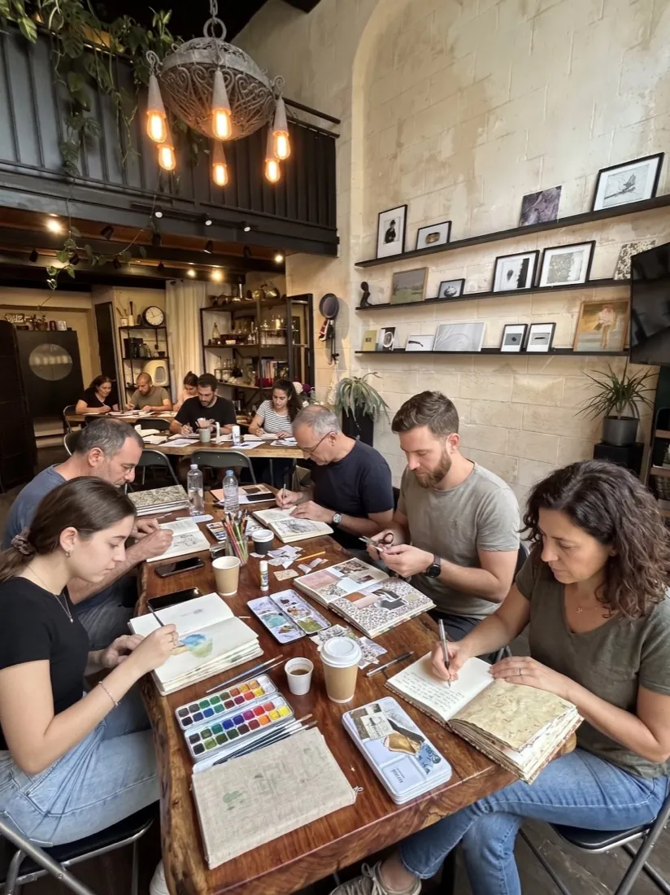

Art Journaling workshop
יש מחשבות שמגיעות כמילים.
אחרות מתגלות בצבע, בקו, בצורה או בכתם.
ומה קורה כשהן נפגשות?
Paper Whispers היא הזמנה למסע יצירתי אל המרחב המרתק שבין המילה הכתובה לדימוי החזותי. מרחב שבו הדמיון משתחרר, גבולות מיטשטשים ואפשרויות חדשות נפתחות.
במהלך ארבעה מפגשים נתנסה בדרכי ביטוי מגוונות המשלבות כתיבה אינטואיטיבית, צבע, צורה, קולאז׳ וטכניקות אמנותיות שונות.
נחקור את יחסי הגומלין שבין מילים לדימויים, נגלה כיצד הם משפיעים זה על זה, ונאפשר לרעיונות, לתחושות ולאסוציאציות לקבל ביטוי אישי ומפתיע.
זהו מרחב להתנסות חופשית, לחשיבה מחוץ למסגרות מוכרות ולגילוי אפשרויות יצירתיות שלא תמיד ידענו שקיימות.
* אין צורך בניסיון קודם באמנות או בכתיבה. רק סקרנות, פתיחות ונכונות להתנסות.
ארבעה מפגשים. אינספור אפשרויות 🌿
Some thoughts arrive as words.
Others emerge through colors, lines, shapes, or textures.
And what happens when they meet?
Paper Whispers is an invitation to explore the fascinating space between the written word and the visual image. A space where imagination unfolds, boundaries dissolve, and unexpected possibilities emerge.
Over four inspiring encounters, we will experiment with diverse forms of expression, bringing together intuitive writing, color, form, collage, and a variety of artistic techniques.
We will explore the intriguing dialogue between words and images, discovering how they influence and transform one another, allowing ideas, emotions, and associations to find their own unique and sometimes surprising expression.
This is a space for creative freedom, for thinking beyond familiar boundaries, and for discovering possibilities we may never have imagined.
* No previous experience in art or writing is required. Only curiosity, openness, and a willingness to explore.
Four encounters. Countless possibilities 🌿
Visual artist, curator, and educator with extensive experience in artistic creation, exhibitions, and the exploration of creative processes.
Her work reflects a deep interest in the dialogue between images, words, and ideas, encouraging curiosity, experimentation, and new ways of seeing.
Paper Whispers, originally conceived several years ago as an art exhibition she created and curated, now unfolds as an intimate creative workshop inviting participants to discover their own expressive possibilities.
אמנית חזותית, אוצרת ומנחה, בעלת ניסיון רב ביצירה אמנותית, בתערוכות ובחקר תהליכי יצירה.
עשייתה האמנותית משקפת עניין עמוק בדיאלוג שבין דימויים, מילים ורעיונות, ומעודדת סקרנות, התנסות ודרכי התבוננות חדשות.
Paper Whispers, שנולדה לפני מספר שנים כתערוכה שיצרה ואצרה, מקבלת כעת ביטוי חדש כסדנה אינטימית המזמינה את המשתתפים לגלות אפשרויות ביטוי אישיות ויצירתיות.